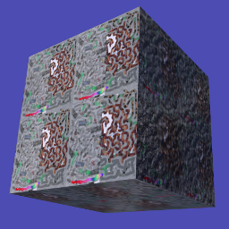
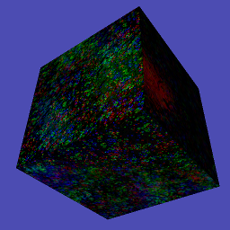

Textures, Lights and Shaders¶
We’ve touched on the roles of these three classes previously but in this chapter I hope to give much more detail of how they fit together and how they can be used.
Textures¶
First of all have a look at the next illustration program textures01.py [1] and run it to see what it does. The code starts from 3D_matrices03.py but replaces the yellow material of the cube with an image texture, the docstrings explain the changes.
Lights¶
Before looking at the next texture example it would be good to get more of an idea how Light works; so open up and run the light01.py [2] example. Again, much of the explanation that I would have put here is in the docstrings so read them and try the experiments suggested in the text.
Now work your way through textures02.py [3] which is using all the functionality available in the “standard” shaders. There are lots of variables to tweak and experiments to do with this example so work your way though it slowly and carefully.
Shaders¶
In the next illustration we will look at what the shader is doing to a) look up the texture values for a given pixel b) adjust for lighting. However the code to get the normal map and reflection map is rather complicated so I will only give an outline description of that here (if you want to look at it in detail you will have to read through the shader yourself!)
Caution the language that shaders use (GLSL) is C-like in syntax, but that in itself shouldn’t be a problem, the confusing aspect is that variables can be “different shapes”. Bearing in mind that in GLSL (as in C) variable types have to be explicitly defined:
float a = 4.12;
vec2 b = vec2(4.12, 5.23);
vec3 c = vec3(4.12, 5.23, 7.34);
a = mod(a, 3.1416); // python equivalent would be a % 3.1416
b = mod(b, 3.1416);
c = mod(c, 3.1416);
b = mod(b, vec2(3.1416, 6.2832);
c = mod(c, vec3(3.1416, 6.2832, 9.4248);

You will see that generally speaking variables can be vectors which the compiled GLSL is designed to process very fast. On the other hand branching and conditional statements are very slow and this sometimes results in strange program structure and use of built in functions such as step() and clamp().
One final bit of explanation before looking at the next example. The dot product of two vectors is often described as “the length of one times the length of the other times the cosine of the angle between them”. This is reasonably easy to apprehend in two dimensions, and when we can think of the vectors as arrows. However in four dimension when the vectors represent RGBA values it’s not so intuitive. A better informal description would be “how much of one vector is in the same direction as the other” it’s still easy to see how this applies to light illuminating a surface but it’s much easier to see that the dot function doesn’t need to do any (slow) trigonometry, it is sufficient to multiply the x,y,z components together and this is very fast:
// surface facing in the same direction as x axis
normal = vec3(1.0, 0.0, 0.0);
// light down, from right, out of the screen
light = vec3(-2.5, -2.5, -2.5);
// results in -2.5 # i.e. (1.0 * -2.5) + (0.0 * -2.5) + (0.0 * 2.5)
float a = dot(normal, light);
So now have a look at shader01.py [4] and play around with it. Any typos or errors in the two shader scripts will be hard to track down so proceed with caution (remember Ctrl-z can get you back to a working version!). Also, because the GLSL is embedded in strings in the python code, the chances are that any code formatting in your editor will not be brilliant, so here is the code again. Vertex Shader:
1 2 3 4 5 6 7 8 9 10 11 12 13 14 15 16 17 18 19 20 21 22 23 24 25 26 27 28 29 30 31 32 33 34 35 36 37 38 39 40 41 42 43 | precision mediump float;
attribute vec3 vertex; // these are the array buffer objects
attribute vec3 normal; // defined in Buffer
attribute vec2 texcoord;
uniform mat4 modelviewmatrix[2]; // [0] model movement [1] projection
uniform vec3 unib[4];
/* umult, vmult => unib[2][0:1] # these are defined in Buffer
u_off, v_off => unib[3][0:1] */
uniform vec3 unif[20];
/* eye position => unif[6][0:3] # defined in Shape
light position => unif[8][0:3] */
varying vec2 texcoordout; // these values set in vertex shader which
varying vec3 lightVector; // are picked up in the fragment shader.
varying float lightFactor;// However their values "vary" by
varying vec3 normout; // interpolating between vertices
void main(void) {
if (unif[7][0] == 1.0) { // a point light; unif[8] is location
// apply the model transformation matrix
vec4 vPosn = modelviewmatrix[0] * vec4(vertex, 1.0);
// to get vector from vertex to the light position
lightVector = unif[8] - vec3(vPosn);
lightFactor = pow(length(lightVector), -2.0); // inverse square law
lightVector = normalize(lightVector); // to unit vector for direction
} else {
lightVector = normalize(unif[8]) * -1.0; // directional light
lightFactor = 1.0; // constant brightness
}
lightVector.z *= -1.0; // fix r-hand axis
// matrix multiplication
normout = normalize(vec3(modelviewmatrix[0] * vec4(normal, 1.0)));
// offset and mult for texture coords
texcoordout = texcoord * unib[2].xy + unib[3].xy;
gl_Position = modelviewmatrix[1] * vec4(vertex,1.0);
/* gl_Position is a pre-defined variable that has to be set in the
vertex shader to define the vertex location in projection space.
i.e. x and y are now screen coordinates and z is depth to determine
which pixels are rendered in front or discarded. This matrix
multiplication used the full projection matrix whereas normout
used only the model transformation matrix*/
}
|
and Fragment shader:
1 2 3 4 5 6 7 8 9 10 11 12 13 14 15 16 17 18 19 20 21 22 23 24 25 26 27 28 29 30 31 32 33 34 35 36 | precision mediump float;
uniform sampler2D tex0; // this is the texture object
uniform vec3 unib[4];
/* blend cutoff => unib[0][2] # defined in Buffer */
uniform vec3 unif[20];
/* shape alpha => unif[5][2] # defined in Shape
light RGB => unif[9][0:3]
light ambient RGB => unif[10][0:3] */
varying vec3 normout; // as sent from vertex shader
varying vec2 texcoordout;
varying vec3 lightVector;
varying float lightFactor;
void main(void) {
gl_FragColor = texture2D(tex0, texcoordout); /* look up the basic
RGBA value from the loaded Texture. This function also takes into
account the distance of the pixel and will use lower resolution
versions or mipmaps that were generated on creation
(unless mipmaps=False was set)
gl_FragColor is another of the pre-defined variables, representing
the RGBA contribution to this pixel */
// try making it a "material" color by swapping with the line above
//gl_FragColor = vec4(0.7, 0.1, 0.4, 0.9);
// to allow rendering behind the transparent parts of this object:
if (gl_FragColor.a < unib[0][2]) discard;
// adjustment of colour according to combined normal:
float intensity = clamp(dot(lightVector, normout) *
lightFactor, 0.0, 1.0);
// try removing the 0 to 1 constraint (with point light):
//float intensity = dot(lightVector, normout) * lightFactor;
// directional lightcol * intensity + ambient lightcol:
gl_FragColor.rgb *= (unif[9] * intensity + unif[10]);
gl_FragColor.a *= unif[5][2]; // modify alpha with the Shape alpha
}
|
There is a khronos GLSL quick reference card [5] if you want to see what all the functions do.
I mentioned above that I would give a general description of how the normal map and reflection map work. If you have attempted to look at the shader code “really” used in pi3d you will have found that it is structured with lots of #includes so that common sections can be re-used - this makes it quite hard to reconstruct. You may have also seen that the normal vector is not passed from the vertex to fragment shader as shown in this example. Instead the light vector is rotated in the vertex shader by a complicated process (Euler angles again) so that it is correctly oriented relative to the normal vector at that vertex if that vector was pointing straight out of the screen i.e. in the -ve z direction!
The reason for this complication is that it then allows the fragment shader to modify the normal vector by simply adding values from the RGB of a normal map texture. Values of red less than 0.5 make the x component of the normal negative, greater than 0.5 positive. The green values control the y component in a similar way.
The reflection map works out the vertical and horizontal angles that a line drawn from the camera to a given pixel would be reflected. The reflection uses the normal vector at each pixel adjusted by the normal map as described above. The reflection angles are then used to look up a position from a Texture where the horizontal range is -pi to +pi (+/- 180 degrees) and the vertical range is -pi/2 to +pi/2 (+/- 90 degrees) This is the standard projection used for photo-spheres.
A Final look at Textures¶
As a final bit of fun have a look at the textures03.py [6] demo. This illustrates how Texture objects can be constructed from numpy arrays (or PIL Image objects) and can be updated each loop. Although numpy or PIL are much faster than python (they are compiled modules written in C) they are not as fast as GPU shaders. However for some applications it can be very convenient to manipulate reasonably small textures in this way. The VideoWalk.py demo (on github.com/pi3d/pi3d_demos/) shows how video frames can be read using ffmpeg and used to update a Texture. This is also a way to use OpenCV images as Textures as they are already numpy arrays.
| [1] | https://github.com/paddywwoof/pi3d_book/blob/master/programs/textures01.py |
| [2] | https://github.com/paddywwoof/pi3d_book/blob/master/programs/light01.py |
| [3] | https://github.com/paddywwoof/pi3d_book/blob/master/programs/textures02.py |
| [4] | https://github.com/paddywwoof/pi3d_book/blob/master/programs/shader01.py |
| [5] | https://www.khronos.org/opengles/sdk/docs/reference_cards/OpenGL-ES-2_0-Reference-card.pdf |
| [6] | https://github.com/paddywwoof/pi3d_book/blob/master/programs/textures03.py |